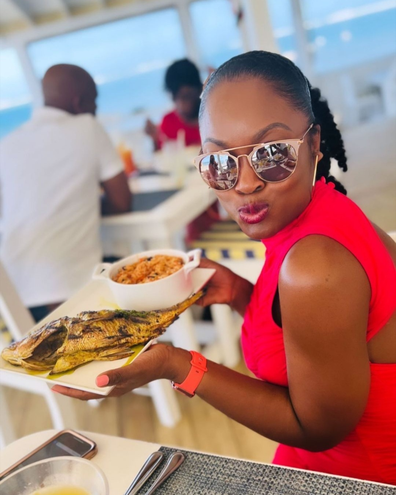
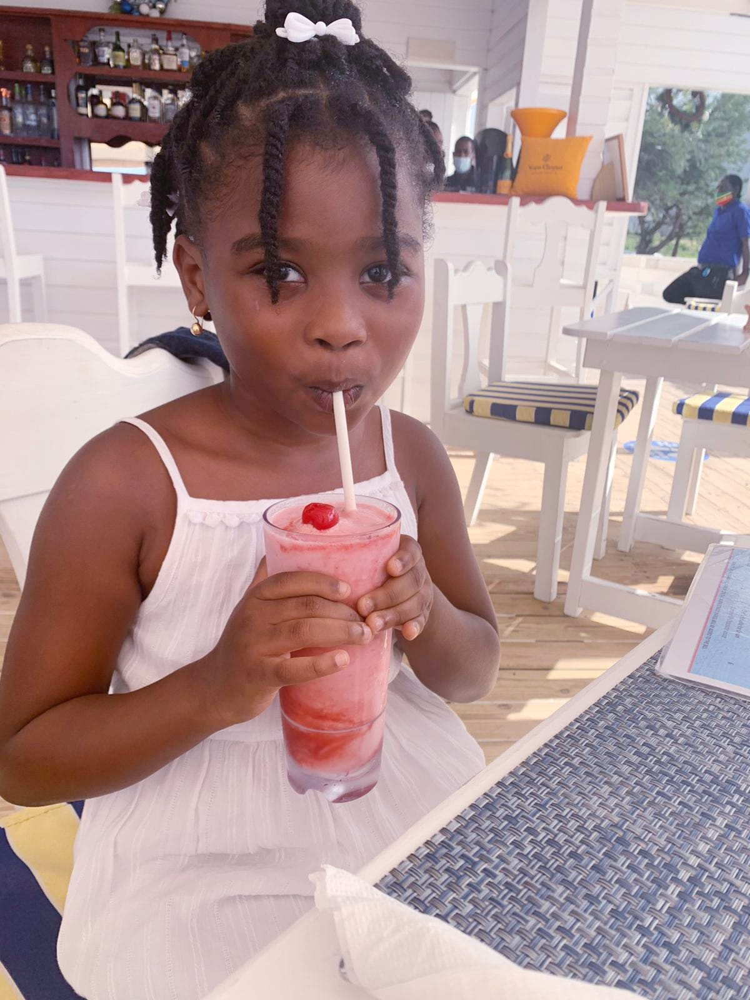

Airy and open, Arthur’s is a must, for those with an appetite for gourmet beach-style eats.
Chefs freshly prepare dishes from scratch using only the finest ingredients. The fishermen with their catches
make their call here with Neptune’s bounty.
Arthur’s offers a casual oceanfront dining experience on the black sandy beach in Dieppe Bay, and just a 10-minute
drive from our Internationally renowned property, "Belle Mont Farm @ Kittitian Hill". The restaurant’s name
pays tribute to Arthur Leaman, the former House & Garden Magazine editor behind the legendary, "Golden Lemon
Inn". With a location just down the beach from a fishing spot popular with locals, Arthur’s menu reflects the
very best St Kitts has to offer from freshest catch of the day, produce from the farm, to our decadent desserts.
Our Bar also has a great list of eclectic / classic cocktails plus and wide selection of popular beverages.
THis is the right choice for you if you're looking for the best in St kitts.

Chef's Secialties
Pot fish $18
Grilled Lobster $32
Frogate Bay jerk pork $18
HandHelds
Authur's Burger $15
The Lobster Roll $20
Blackened Fish Wrap $13

Tues - Sun 12 - 9 PM